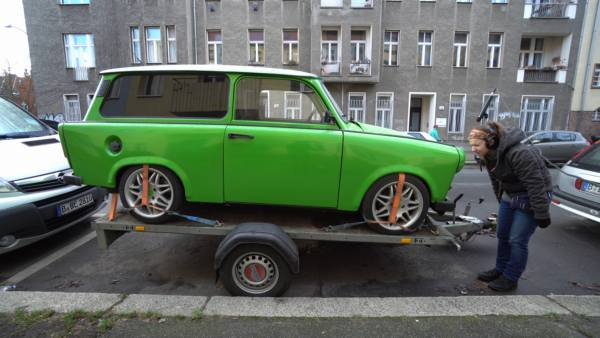
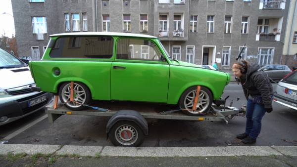
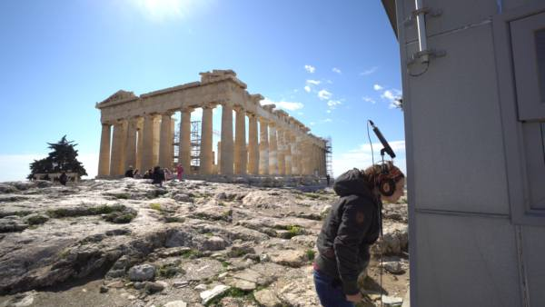
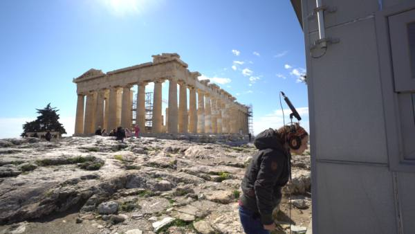
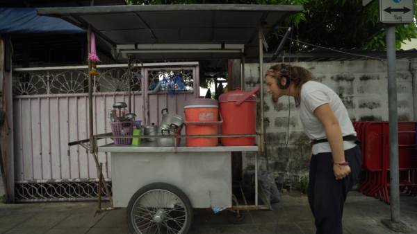
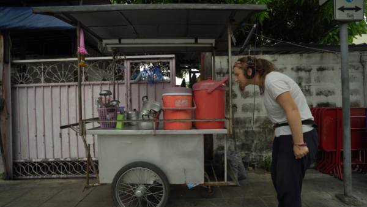
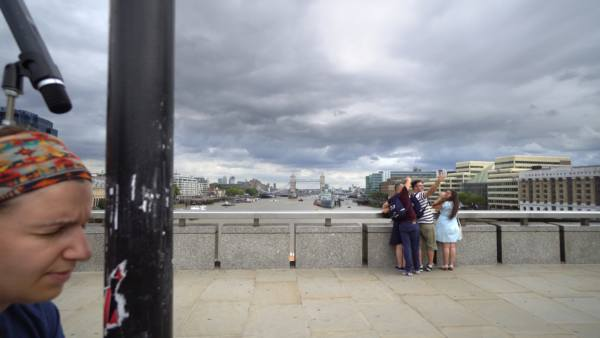
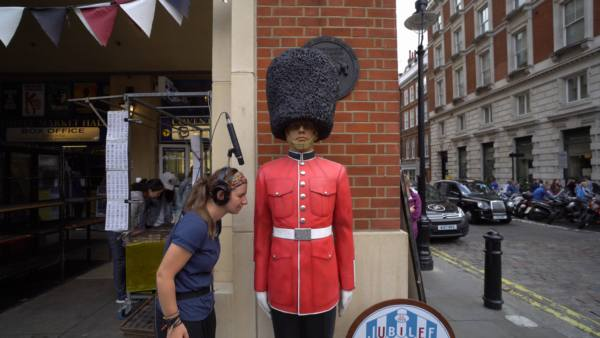
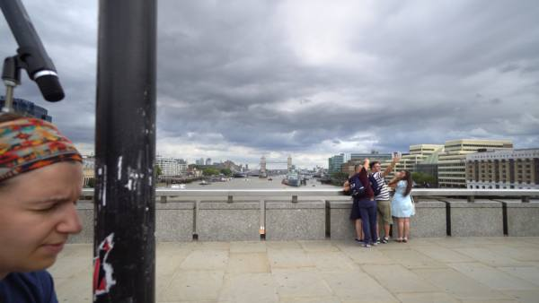
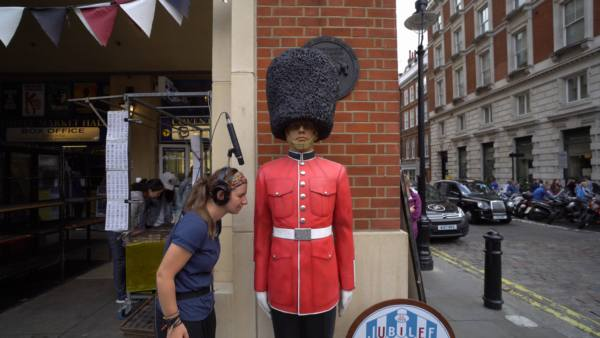

Hitting My Head On The World
Anna Vasof
“Hitting My Head On The World” is a series of experimental video and sound project consisting of more episodes. I visit several cities and I hit my head to different walls and surfaces. On my head is mounted a microphone, which records the sounds of these head-strokes . Each action is filmed from the side with a camera connected to the microphone. In this way is visible: the action, the sound recording, the surface that I hit my head and the urban ambience of the place. Each city has its own episode. Their title consists of the names of the cities and the word "Hit", for example "Vienna Hit", "Berlin Hit" etc. For each episode a music piece is composed from the head beats. The music is also used to structure the video editing. Each episode is around 2 minutes long. Hitting the head on a wall is a worldwide known gesture. Desperate people who do not know what to do next, they hit their heads against the wall. But if we observe this action from the perspective of the wall, then the wall is injured by a human head and suddenly a hopeless action begins to develop humor. In precisely those absurd moments in which our morals are paralyzed, we can observe and interpret the world from a different perspective. In the videos, my head is interpreted as a musical instrument, which is played in multiple locations around the world and creates an audiovisual "landscape" of the world.
Berlin hit

 

Vienna hit


Athens hit
 


Bangkok hit
 

Auckland hit
London hit
 



Bio: Anna Vasof is an architect and media artist. Born in 1985, she studied architecture at the University of Thessaly (2010) in Greece and Transmedia Art (2014) at the University of Applied Arts in Vienna. Since 2004 her videos and short movies have been presented in several festivals, some of them winning distinctions. She’s currently writing a Ph.D. thesis about an animation technique that she develops and at the same time working on designing and building innovative mechanisms for producing critical and narrative videos, actions and installations.